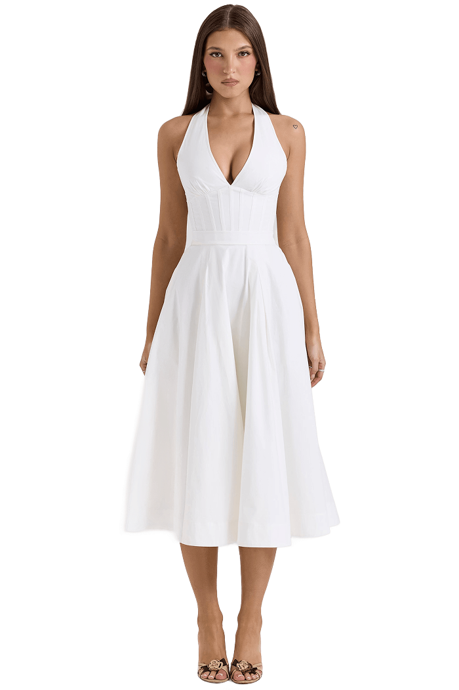
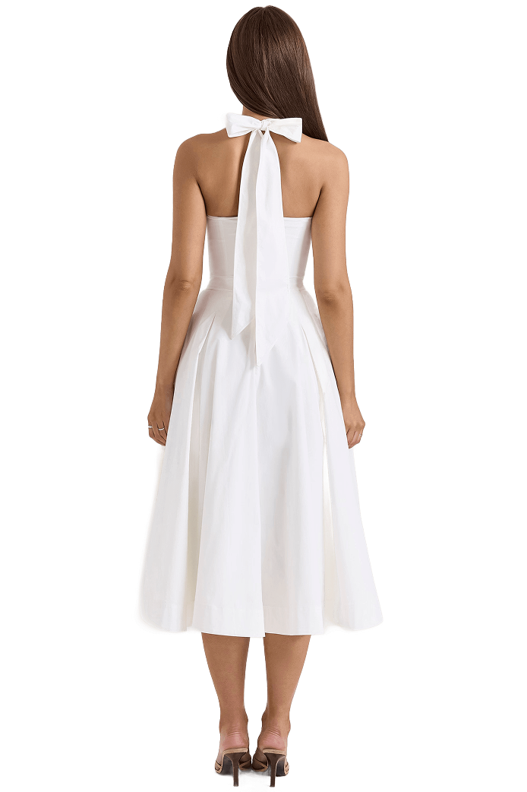

Carina’s Graduation Dress Plans
A simple way to be part of my graduation season
Graduation is one of those rare moments that feels both ordinary and once in a lifetime. I made this page to share a small dream of mine: wearing a white graduation dress that feels like a goodbye to college and a fresh beginning to the next chapter. If you would like to support me, I would be deeply grateful. If you are simply here to read, that already means a lot.
The Meaning of White Dresses
One of the most iconic white dresses in modern American culture is the symbolic graduation dress. Every May, college girls throughout the USA put on an elegant white dress to symbolize the end of youth and the beginning of a new chapter.
If a beautiful princess dress is every girl’s dream, then for many college girls, having a pretty white dress is a dream of its own, a perfect closure and a little self-award. It represents completion, self-recognition, and stepping into adulthood with intention.

My Dream Dress
After months of imagining this moment, I found the dress that feels like me. The Allena dress by House of CB has a timeless silhouette that feels both strong and soft. It is elegant without being loud. It feels like closure and confidence at once.
As much as I love it, it sits outside what I can comfortably afford on my own. So, I created this page as a small, honest way to share the story behind it, and to invite anyone who wants to be part of this graduation milestone.

Join My Graduation Journey
If you would like to be part of this milestone, you can contribute any amount that feels comfortable to you. There is truly no pressure. I will cover the rest myself, and your kindness is already meaningful whether you donate or not.
If you decide to donate, the options below are the easiest ways to send a contribution. Thank you for being part of my graduation season. I will remember it when I walk across the stage.
Zelle opens a QR code in a new tab.
If you would rather send a message instead of a donation, I would love that too.